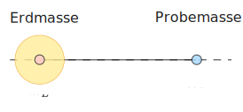

Gravitationsfeld der Erde
Natürlich vorhandenes geophysikalisches Feld
Passives geophysikalisches Messverfahren
Ausgenutzt wird der Dichteunterschied zwischen Erkundungsobjekt und Nebengestein.
Dichte ist der physikalische Parameter.
Physikalische Grundlagen
Gravitation ist eine fundamentale physikalische Eigenschaft von Masse

Newtonsches Gravitationsgesetz
Beschreibung der physikalischen Wechselwirkung zwischen Massen
Betrag der Gravitationskraft: \[
|\mathbf{F}| = f \frac{m_{E}\, m}{|\mathbf{r}|^{2}}
\]
Gravitationskonstante \(f = (6.6742 \pm 0.0018) \times 10^{-11} \mathrm{~m^3 \cdot kg^{-1} \cdot s^{-2}}\)
Die auf beide Massen wirkende Kräfte haben denselben Betrag und zeigen jeweils auf den anderen Massepunkt.
Mit \(\mathbf{r}_{21} = \mathbf{r}_{2} - \mathbf{r}_{1}\) ist \[
\mathbf{F}_{21} = -f \frac{m_{E}\, m}{|\mathbf{r}_{21}|^3} {\mathbf{r}}_{21}
\]
Die Kraft \(\mathbf{F}_{21}\) weist von der Masse \(m\) zur Masse \(m_{E}\) .
Es folgt aus dem Zweiten Newtonschen Gesetz:
\[
\mathbf{F} = m \mathbf{g},
\]
also ist
\[
\mathbf{g} = -f \frac{m_{E}}{|\mathbf{r}_{21}|^3} {\mathbf{r}}_{21}.
\]
Das ist die baryzentrische Gravitationsbeschleunigung.
Mit \(\mathbf{r} = \mathbf{r}_{21}\) und \(\hat{\mathbf{r}} = \mathbf{r}/|\mathbf{r}|\) erhalten wir
\[
\mathbf{g} = - f \frac{m_{E}}{|\mathbf{r}|^2} \hat{\mathbf{r}}
\]
Die Richtung der Beschleunigung weist von \(m\) nach \(m_{E}\) .
Die in der angewandten Gravimetrie übliche Einheit der Gravitationsbeschleunigung ist das Gal .
1 Gal = \(10^{-2}\, \mathrm{m} \cdot \mathrm{s}^{-2}\)
1 mGal = \(10^{-5}\, \mathrm{m} \cdot \mathrm{s}^{-2} = 10\, \mu\mathrm{m} \cdot \mathrm{s}^{-2}\)
Das Gravitationsfeld ist konservativ .
Verschiebungsarbeit \[
U_{12} = - \int_{P_{1}}^{P_{2}} \mathbf{F}\cdot \, \dd {\mathbf{r}} = - m \int_{P_{1}}^{P_{2}} \mathbf{g} \cdot \, \dd {\mathbf{r}}
\] \[
\oint_{C} \mathbf{g} \cdot \,\dd{\mathbf{r}} = 0
\] woraus folgt \[
\oint_{C} \mathbf{g} \cdot \,\dd{\mathbf{r}} =
\int _{A_{C}} (\curl \mathbf{g}) \cdot \,\dd{\mathbf{A}} = 0
\] und \[
\curl \mathbf{g} = \mathbf{0}.
\]
Gravitationspotential
\[
\mathbf{g} = -\grad V
\]
Darstellung der Gravitationskraft und der Schwerebeschleunigung für eine kugelförmige, homogene Erde durch Feldlinien:
Feldlinien verlaufen radial zum Massenzentrum
Dichte der Feldlinien ist proportional zu \(|\mathbf{F}|\) und \(|\mathbf{g}|\)
Äquipotentialflächen : Flächen mit konstantem Schwerepotential stehen senkrecht auf den FedlinienNiveauflächen sind Kugelflächen
Gravitationsbeschleunigung der Erde
Begriffe: Erdschwerebeschleunigung , Schwere
Modellvorstellung : Homogenes Rotationsellipsoid der Gesamtmasse \(m_{E}\) steht unter dem Einfluss der Anziehung durch weitere kosmische Massen (Sonne, Mond).
Die Gravitationsbeschleunigung \(\mathbf{g}\) setzt sich zusammen aus drei Beiträgen:
\(\mathbf{g} = \mathbf{a}_{E} + \mathbf{a}_{Z} + \mathbf{a}_{G}\)
Anziehungsterm: Gravitationsfeld \(\mathbf{a}_{E}\)
Zentrifugalterm: Zentrifugalbeschleunigung \(\mathbf{a}_{Z}\)
Gezeitenterm: Gezeitenbeschleunigung \(\mathbf{a}_{G}\)
Anziehungsterm
Betrag: \[
a_{E} = f \frac{m_{E}}{R_{E}^2(\varphi)}
\]
mit
\(m_{E}\) : Masse der Erde, \(m_{E} = 5.972 \times 10^{24}\,\mathrm{kg}\)
\(R_{E}(\varphi)\) : breitenabhängiger Erdradius
Mathematische Beschreibung des Ellipsoids: Erdellipsoid
Große Halbachse
\(a\) \(6378.137\) km
Kleine Halbachse
\(c\) \(6356.7523142\) km
Abplattung \((a-c)/a\)
\(f\) \(1/298.257223563\)
Exzentrizität
\(e\) \(6.69437999014 \times 10^{-3}\)
Geozentrische Gravitationskonstante
\(GM\) \(3,986004418 \times 10^{14} \, m^3 \cdot s^{-2}\)
Winkelgeschwindigkeit
\(\omega\) \(72.92115 \times 10^{-6}\,\mathrm{rad/s}\)
Zentrifugalterm
Erdrotation:
\[
|\mathbf{a}_{Z}| = \omega_{E}^2 r(\varphi) = \omega_{E}^2 R_{E} \cos\varphi
\]
Beispielrechnungen
import numpy as np= 6378.137e3 = 6356.7523142e3 = (a* a* c)** (1 / 3 )= 5.972168e24 = 6.6743e-11 = f * mE= 72.92115e-6 = omega** 2 * RE= fmE / RE** 2 + azE= fmE / c** 2 print (f". f*mE = { fmE:.3e} m^3/s^2" )print (f"Äquator: g = { gE:.3f} m/s^2" )print (f"Pol: g = { gP:.3f} m/s^2" )print (f". az = { azE:.3f} m/s^2" )
. f*mE = 3.986e+14 m^3/s^2
Äquator: g = 9.854 m/s^2
Pol: g = 9.864 m/s^2
. az = 0.034 m/s^2